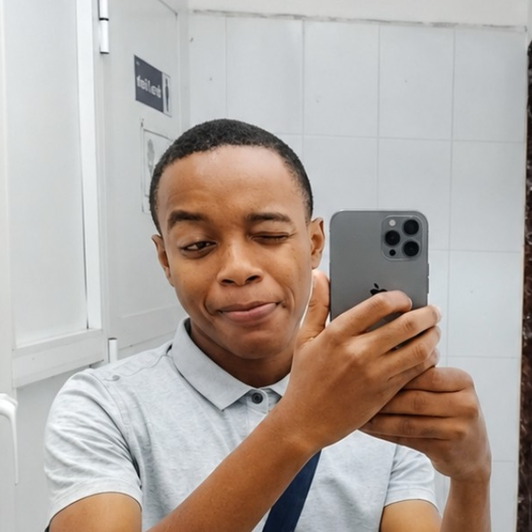

TOP.FATMEYN Website
Personal buildPersonal portfolio interface and responsive front-end build.

I’m Abdulrahim Said Othman, a cybersecurity enthusiast from Zanzibar, Tanzania. I’m building my skills in digital security, exploring technology, and creating useful digital projects.
Network security · Web security
Digital safety fundamentals
Personal builds, experiments
and documented case studies
Safe practice environment
for authorized learning
Tools and technologies
I’m currently learning
I’m Abdulrahim Said Othman, based in Zanzibar, Tanzania. I’m interested in cybersecurity, ethical hacking and digital technology. My focus is to keep learning, build practical projects and use security knowledge responsibly.
Personal portfolio interface and responsive front-end build.
Study notes and safe practice reflections for owned lab environments.
Planned exercises using intentionally vulnerable training systems.
Practice only on systems you own or have explicit permission to test.